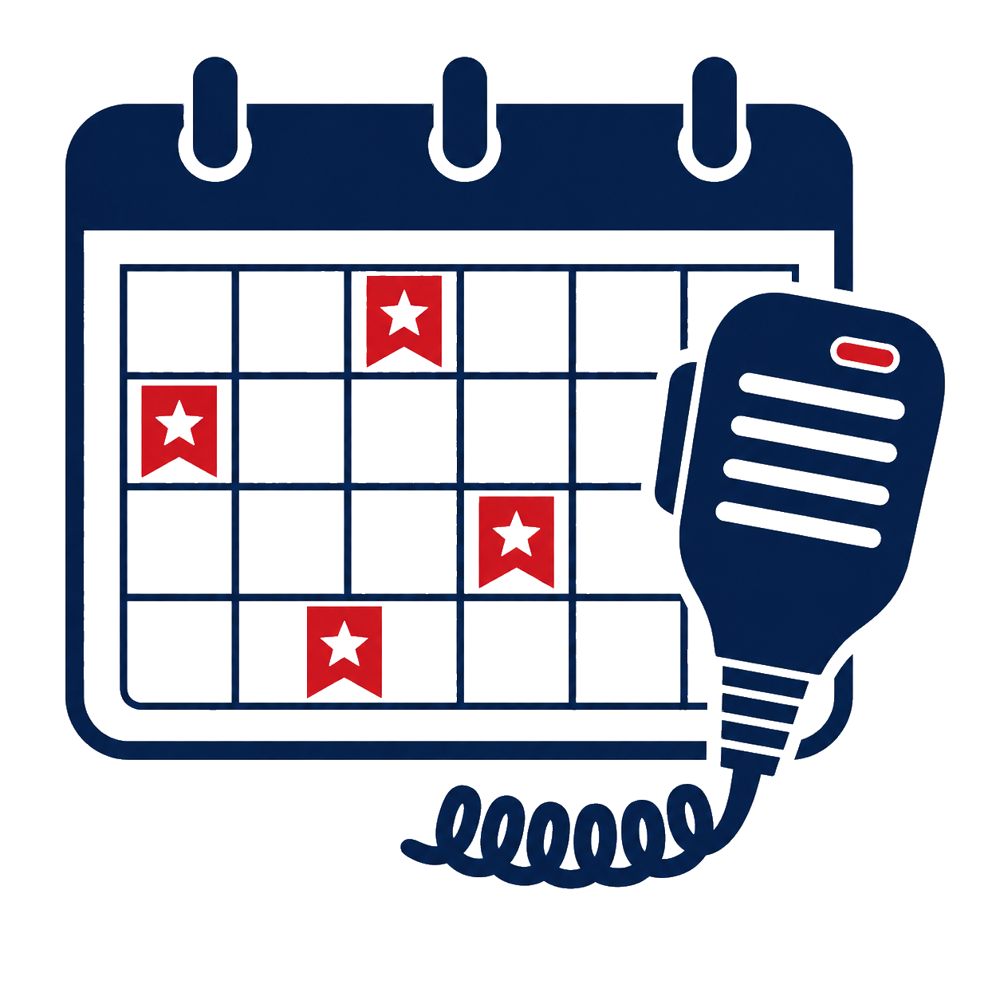
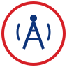

AREDN Info
Learn about the AREDN mesh network and how it supports emergency communications.
Open pageAmateur Radio Emergency Service
Dona Ana County ARES volunteers provide reliable communications support to local and county agencies during emergencies, disasters, severe weather operations, and public service events across southern New Mexico.
Learn about the AREDN mesh network and how it supports emergency communications.
Open pageView weekly net schedules and frequencies for local ARES nets and partner nets.
Open page
Access training resources and deployment information for volunteers.
Open page